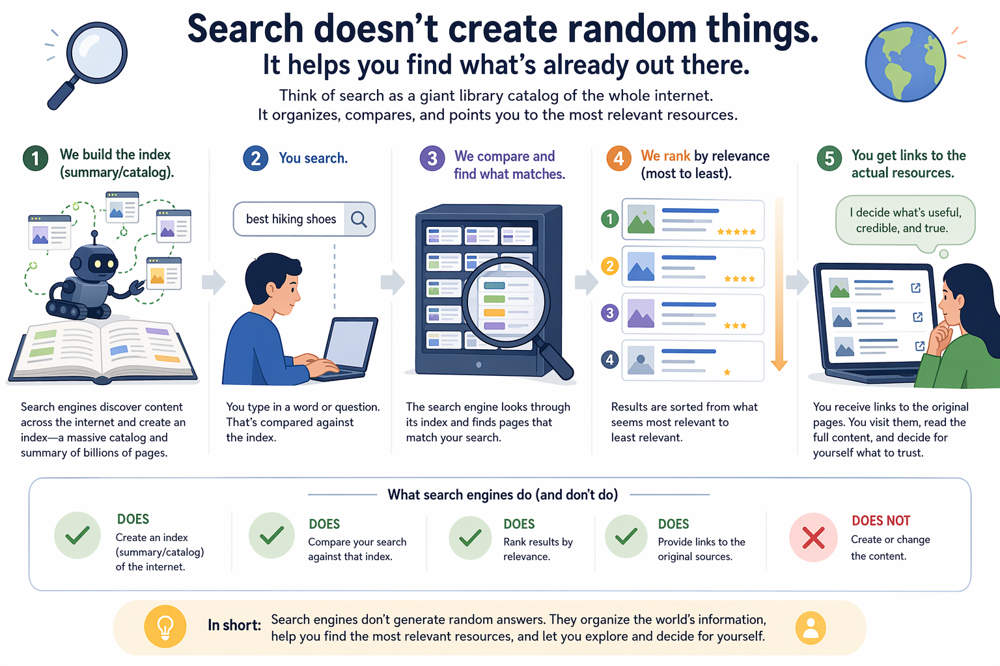
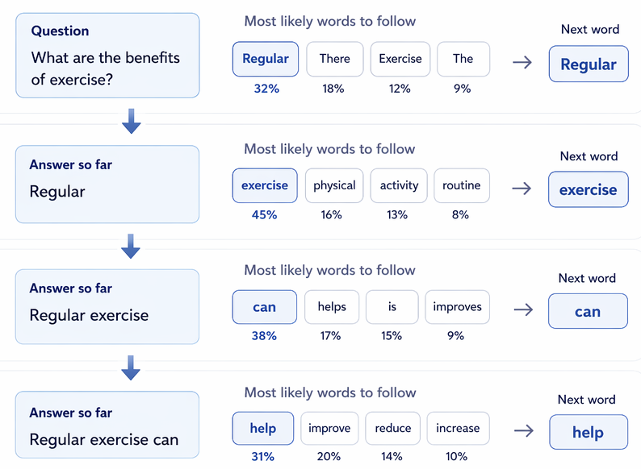
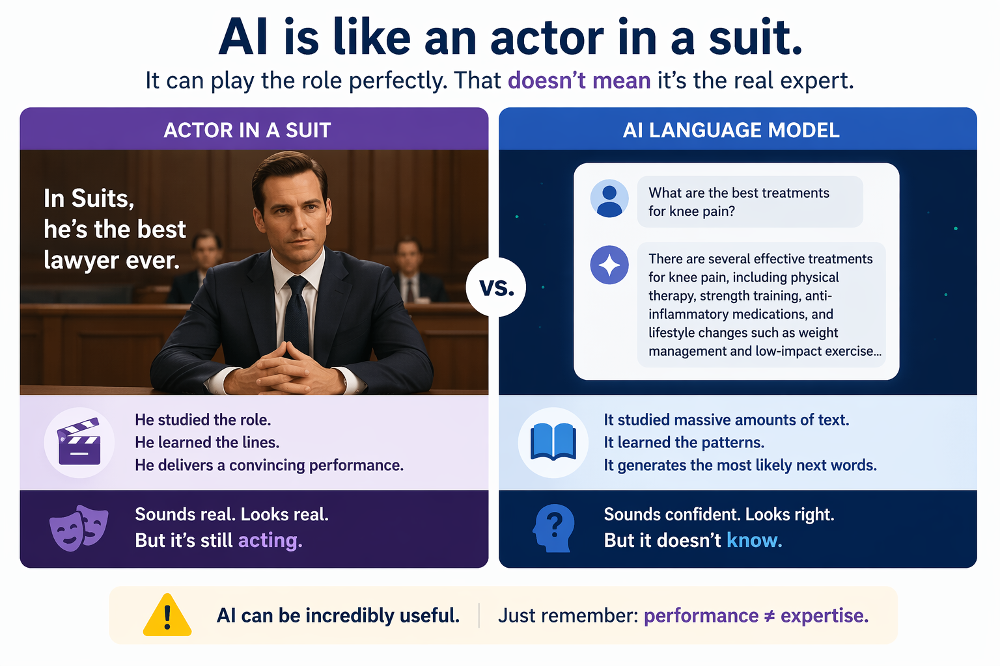

Know the difference between Search vs. AI and choose the right one for the task.
Curious Beginners • Session 1
How Search and AI Actually Work
This section explains the difference between search engines and AI tools, shows where hallucinations come from, and gives a practical rule for deciding when to search and when to use AI.
Search finds existing content. AI generates a response from patterns learned during training. Misusing AI for plain search tasks without due caution will give you fabricated results.
AI and Search in a Nutshell
The following section covers the theory behind AI and search engines, and how the mechanics of AI cause hallucinations.
How search engines work
Think through metaphor
Think of Google as a librarian. When you describe what you're looking for, the librarian checks the catalog and hands you the most relevant matches ranked by fit. They'll always point you to the original source rather then recalling the book contents from memory. Search works the same way: it points you to the best matching sources, but doesn't interpret them for you. Relevance and accuracy are still your call.
Search engines update their ''catalog' continuously, so they're your best for checking current facts, original sources, and quick lookups. And because search points you to the source rather than interpreting it, it won't fabricate — if you're reading from a reputable source, the content is likely accurate.

How AI tools work
AI tools like ChatGPT or Claude trained on a massive amount of text, including books, articles, and websites, to identify patterns in what words tend to follow other words. When you ask a question, it doesn't look anything up. It predicts the most likely first word of an answer, then the next, then the next. Every word is a calculated guess based on patterns and nothing more.

Think through metaphor
Think of an A-list actor preparing to play a lawyer. They sit in on real trials, study courtroom language, and absorb how arguments are structured. Eventually they can sound remarkably like a lawyer, and much of what they say will actually be correct. But you would never take legal advice from them over a real attorney. The performance is convincing. The expertise isn't there.

AI knowledge has a hard cutoff. Training ends at a point in time and anything after that doesn't exist to the model. There is no internal fact-check, and the output always sounds finished regardless.
That said, imitation is extremely useful on the right tasks. Drafting, summarizing, explaining, and brainstorming are all pattern-heavy tasks where AI performs well precisely because it has absorbed so much of how humans do them. Know what you're working with and it becomes a powerful tool.
Hallucinations
We established that AI picks the most probable next word, one at a time, and can only guess. When those guesses are wrong, we call it a hallucination.
Think through metaphor
If someone asks what's currently in your fridge, you can guess and probably get close, or you can open the fridge and actually check. On its own, AI cannot open the fridge and will always resort to guessing.

Hallucinations sound plausible and fit the context, because we are still picking the most likely word to follow, which makes them hard to catch. In most cases you need to already know the correct answer to spot one. The more niche the question, the harder it is for AI to guess correctly and for you to validate.
Most AI tools like Copilot and Claude can choose to search the internet and interpret the results rather than guess. This reduces the problem but does not eliminate it. Whether a response came from search or training data is rarely obvious, and even search-assisted answers can go wrong if the source was misread or the wrong one was used. We will look at this in more detail in Session 2.
We can never eliminate hallucinations entirely, but three things reduce how often they cause problems:
-
Use search for current facts, specific figures, or anything that needs a source. Don't ask AI to guess what search can answer directly. Try the query below in Google before asking AI.
Example search query
Current FCC political advertising disclosure requirements 2025
- For niche topics or industry-specific language, give AI context before asking. Paste a paragraph from an internal SOP or workflow description, then ask your question. It improves results but won't guarantee them.
-
Ask AI whether it searched or guessed. The habit of asking matters even when the answer is uncertain.
Copy prompt
Did you search for this or is this from your training data?
The tradeoff
AI is always a tradeoff of speed versus accuracy. You become a stronger user when you learn to use AI to improve speed while mitigating hallucination risk. A good rule of thumb: the time needed is reduced, but the effort is frequently the same or even higher.
Search vs. AI Cheat Sheet
Use the comparison below when deciding what tool to reach for first.
| What it does | Search engine | AI tool |
|---|---|---|
| Function | Finds existing content | Generates a response |
| Source | Pre-built index of web pages | Patterns learned during training |
| Best used for | Current facts, sources, news, specific lookups | Drafting, summarizing, explaining, brainstorming |
| Main risk | Outdated or irrelevant results | Confidently wrong answers |
| Output | Links to pages | Generated text |
In practice
Search is great for finding specific, current, real things. AI is great for drafting, summarizing, explaining, and brainstorming. The point of the difference is not to avoid AI — it is to know when you need a live source instead of a pattern-based answer.
Ampersand Spotlight
Below are department-specific examples showing when search is a better fit and when AI is a better fit. All in the context of Ampersand!
| Department | Use search for | Use AI for |
|---|---|---|
| Ad Operations | Nielsen DMA rankings, current FCC political windows, station call letters or team match-ups for sporting events | Drafting an email explaining a discrepancy, creating macros or scripts to reformat ad logs for individual client specs, building templates for operational workflows |
| Sales | Current agency assignments for a client, specific competitor capability verification, Nielsen DMA rankings, political windows, team match-ups for sporting events | Executive summaries for clients, new business prospecting emails, positioning an agency ask into a clear narrative for an MVPD lead, creating macros or scripts to align planning workspaces, ideating how to position our offering against a competitor |
| Political Advertising | Current FEC filings, lowest unit rate windows, legal names and addresses for disclaimers | Order confirmation letters, internal campaign summaries, automations to consolidate multiple files into a single output |
| Finance & Billing Operations | Exchange rates, IRS regulations or tax code sections, vendor W-9 status | Vendor contract summaries, billing discrepancy explainers, budget narrative drafts, step-by-step instructions for Excel functions and macro capabilities |
| HR & People | FMLA rules, state leave law, benchmark salary reports, compliance training requirements | Crafting job descriptions, policy update drafts, summarizing employment laws, comparing insurance plans based on benefit grids |
| Marketing & Comms | Competitor press releases, award submission deadlines, brand mentions or media pickups | Social copy, press release drafts, event invitations, facilitated creative ideation for visual concepts, scripts to reformat PPTs based on a defined design guide |
| Technology & Engineering | Official API docs, third-party error codes, vendor capabilities | Plain-language explanations for technical proposals, requirements docs from bullet notes, internal documentation drafts, cross-referencing files and combining sprint notes into a single output |
| Data & Insights | Methodology benchmarks, industry measurement standards, current attribution partner capabilities and measurement offerings | Drafting narrative summaries around aggregated campaign results, positioning insights for client-facing storytelling, structuring how to present performance findings clearly |
| Any Department | Any answer that must be current, sourced, or legally exact | Any task where structure, tone, or a first draft is the hard part — specifics get verified later |
Practice: Training Discretion
We could reason about when to use AI vs. search for hours — but in day-to-day work, there's no time for that. Instead, we recommend building intuition through practice so the right call becomes second nature.
Search or AI?
Describe a task, decide what you think it is, then see what the analysis says.
Answer:
Explanation
Reframing — what would the opposite look like?
Conclusion & Reflections
Take a moment to reflect — it's what makes the learning stick.
- Search finds. AI generates. Different tools, different jobs.
- AI picks the most probable next word. Useful for drafting, unreliable for facts.
- Hallucinations are structural, not a bug. AI has no way to know when it's wrong, and the output always sounds finished regardless.
- The more niche the question you ask AI, the harder it is to guess correctly and the harder it is for you to spot the mistake.
- AI saves time. It rarely saves effort.
- Think of a recent task you used AI for. Would search have been a better fit?
- Have you ever acted on an AI response without verifying it? What was at stake?
- In your role, what information would be most dangerous to get wrong?
- What changes if you treat every AI output as a first draft?